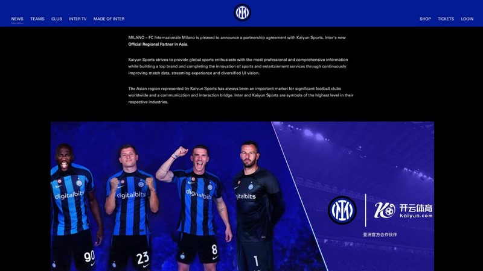

开云体育
国际米兰宣布与开云体育达成官方合作伙伴关系
开云官网新闻板块
国际米兰宣布与开云体育达成官方合作伙伴关系

近日，开云体育与意大利豪门足球俱乐部国际米兰签署了一份协议，成为官方区域合作伙伴。这项合作为两家公司开拓市场提供了更多机会，有利于进一步深化体育领域的改革，实现线上线下双通道的数字体育新模式，并在未来持续为球迷朋友们带来更加精彩的赛事和专业资讯。
国际米兰成立于1908年，是一家全球拥有数千万球迷的顶级足球俱乐部。在2010年欧冠赛场上，“狂人”穆里尼奥率队一路战胜切尔西、巴塞罗那等强敌，闯入欧洲冠军联赛的决赛。最终，国际米兰在伯纳乌球场2-0击败拜仁慕尼黑，获得球队历史上第三座欧冠冠军，并实现了赛季“五冠王”的伟业，成为首个意大利联赛获得此荣誉的球队。
开云体育是一家专注于在线体育娱乐的公司，通过创新的技术和丰富的行业经验，为客户提供高品质的体育娱乐服务。国际米兰则是一家历史悠久、声名远扬的足球俱乐部，在意大利足球界和国际足坛上享有盛誉。
两家公司的合作将在许多方面展开，其中最重要的是开云体育将成为国际米兰官方合作伙伴，向球迷提供在线娱乐服务。这项合作还将包括共同的市场营销活动，以及对国际米兰球迷和开云体育客户的奖励计划。